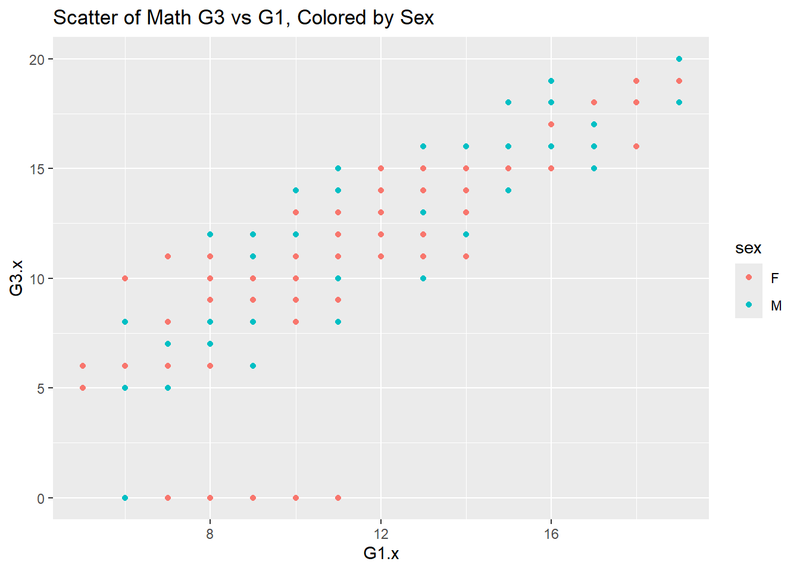
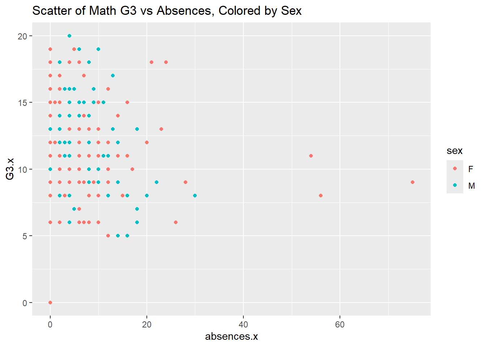

First, modify the code provided with the download to read in the data from a local file source (your downloaded .csv files) and combine the two data frames.
Rows: 649 Columns: 33
── Column specification ────────────────────────────────────────────────────────
Delimiter: ";"
chr (17): school, sex, address, famsize, Pstatus, Mjob, Fjob, reason, guardi...
dbl (16): age, Medu, Fedu, traveltime, studytime, failures, famrel, freetime...
ℹ Use `spec()` to retrieve the full column specification for this data.
ℹ Specify the column types or set `show_col_types = FALSE` to quiet this message.
join_cols <-c("school","sex","age","address","famsize","Pstatus","Medu","Fedu","Mjob","Fjob","reason","nursery","internet")combined_tibble <-inner_join(math_tibble, por_tibble, by = join_cols)
Warning in inner_join(math_tibble, por_tibble, by = join_cols): Detected an unexpected many-to-many relationship between `x` and `y`.
ℹ Row 79 of `x` matches multiple rows in `y`.
ℹ Row 79 of `y` matches multiple rows in `x`.
ℹ If a many-to-many relationship is expected, set `relationship =
"many-to-many"` to silence this warning.
print(nrow(math_tibble))
[1] 395
print(nrow(por_tibble))
[1] 649
print(nrow(combined_tibble)) # 382 students
[1] 382
Note on the issue : This message means that the columns used for joining do not uniquely identify each student, causing some rows in the math data to match multiple rows in the Portuguese data.
Warning
Warning in inner_join(math_tibble, por_tibble, by = join_cols) : Detected an unexpected many-to-many relationship between x and y. ℹ Row 79 of x matches multiple rows in y. ℹ Row 79 of y matches multiple rows in x. ℹ If a many-to-many relationship is expected, set relationship = "many-to-many" to silence this warning.
Use an inner_join() on all variables other than G1, G2, G3, paid, and absences.
Next, for the math data, Portuguese, and combined data, choose four categorical variables you are interested in and convert those into factor variables in each tibble (use the same four variables in each).
Look at how the data is stored and see if everything makes sense.
Document the missing values in the data.
summary(combined_tibble)
school sex age address famsize
Length:320 F:174 Min. :15.00 R: 67 Length:320
Class :character M:146 1st Qu.:16.00 U:253 Class :character
Mode :character Median :16.00 Mode :character
Mean :16.52
3rd Qu.:17.00
Max. :22.00
Pstatus Medu Fedu Mjob
Length:320 Min. :0.000 Min. :0.000 Length:320
Class :character 1st Qu.:2.000 1st Qu.:2.000 Class :character
Mode :character Median :3.000 Median :3.000 Mode :character
Mean :2.872 Mean :2.622
3rd Qu.:4.000 3rd Qu.:4.000
Max. :4.000 Max. :4.000
Fjob reason guardian traveltime
Length:320 course :118 father: 74 Min. :1.000
Class :character home : 87 mother:237 1st Qu.:1.000
Mode :character other : 30 other : 9 Median :1.000
reputation: 85 Mean :1.428
3rd Qu.:2.000
Max. :4.000
studytime failures schoolsup famsup
Min. :1.000 Min. :0.00000 Length:320 Length:320
1st Qu.:1.000 1st Qu.:0.00000 Class :character Class :character
Median :2.000 Median :0.00000 Mode :character Mode :character
Mean :2.084 Mean :0.08125
3rd Qu.:3.000 3rd Qu.:0.00000
Max. :4.000 Max. :3.00000
paid.x activities nursery higher
Length:320 Length:320 Length:320 Length:320
Class :character Class :character Class :character Class :character
Mode :character Mode :character Mode :character Mode :character
internet romantic famrel freetime
Length:320 Length:320 Min. :1.000 Min. :1.000
Class :character Class :character 1st Qu.:4.000 1st Qu.:3.000
Mode :character Mode :character Median :4.000 Median :3.000
Mean :3.987 Mean :3.203
3rd Qu.:5.000 3rd Qu.:4.000
Max. :5.000 Max. :5.000
goout Dalc Walc health
Min. :1.000 Min. :1.000 Min. :1.000 Min. :1.000
1st Qu.:2.000 1st Qu.:1.000 1st Qu.:1.000 1st Qu.:3.000
Median :3.000 Median :1.000 Median :2.000 Median :4.000
Mean :3.069 Mean :1.438 Mean :2.225 Mean :3.522
3rd Qu.:4.000 3rd Qu.:2.000 3rd Qu.:3.000 3rd Qu.:5.000
Max. :5.000 Max. :5.000 Max. :5.000 Max. :5.000
absences.x G1.x G2.x G3.x
Min. : 0.000 Min. : 5.00 Min. : 0.00 Min. : 0.00
1st Qu.: 0.000 1st Qu.: 9.00 1st Qu.: 9.00 1st Qu.: 9.00
Median : 4.000 Median :11.00 Median :11.00 Median :11.00
Mean : 5.412 Mean :11.29 Mean :11.18 Mean :11.04
3rd Qu.: 7.250 3rd Qu.:14.00 3rd Qu.:14.00 3rd Qu.:14.00
Max. :75.000 Max. :19.00 Max. :19.00 Max. :20.00
paid.y absences.y G1.y G2.y
Length:320 Min. : 0.000 Min. : 0.00 Min. : 5.00
Class :character 1st Qu.: 0.000 1st Qu.:11.00 1st Qu.:11.00
Mode :character Median : 2.000 Median :12.00 Median :12.00
Mean : 3.247 Mean :12.39 Mean :12.57
3rd Qu.: 4.000 3rd Qu.:14.00 3rd Qu.:14.00
Max. :32.000 Max. :19.00 Max. :19.00
G3.y
Min. : 0.00
1st Qu.:11.00
Median :13.00
Mean :12.88
3rd Qu.:15.00
Max. :19.00
sum(is.na(combined_tibble))
[1] 0
Categorical variables
Create a one-way contingency table, a two-way contingency table, and a three-way contingency table for some of the factor variables you created previously. Use table() to accomplish this.
, , = course
R U
F 12 53
M 16 37
, , = home
R U
F 3 38
M 6 40
, , = other
R U
F 5 10
M 4 11
, , = reputation
R U
F 15 38
M 6 26
Note
Interpretation:
One-way Contingency
Selected number : 174
There are 174 female students in this dataset.
Two-way Contingency
Selected number : 35
35 students are female and live in a rural area.
Three-way Contingency
Selected number : 15
There are 15 students who are female, live in a rural area, and whose reason for choosing the school is “reputation”.
Create a conditional two-way table using table().
# Once, by subsetting the data (say with filter()) and then creating the two-way tablereputation_students <- combined_tibble %>%filter(reason =='reputation')table(reputation_students$sex, reputation_students$address)
R U
F 15 38
M 6 26
# Once, by creating a three-way table and subsetting itthree_way_table[,,"reputation"]
R U
F 15 38
M 6 26
Create a two-way contingency table using group_by() and summarize() from dplyr.
Create a histogram, kernel density plot, and boxplot for two of the numeric variables across one of the categorical variables.
ggplot(combined_tibble |>drop_na(G3.x, sex),aes(x = G3.x, fill = sex)) +geom_histogram(position ="identity", alpha =0.5, binwidth =1) +labs(title ="Histogram of Math G3 by Sex")
ggplot(combined_tibble |>drop_na(G3.x, sex),aes(x = G3.x, fill = sex)) +geom_density(alpha =0.5) +labs(title ="Density Plot of Math G3 by Sex")
ggplot(combined_tibble |>drop_na(G3.x, sex),aes(x = sex, y = G3.x)) +geom_boxplot() +labs(title ="Boxplot of Math G3 by Sex")
Create two scatterplots relating a G3 variable to other numeric variables (put G3 on the y-axis).
ggplot(combined_tibble |>drop_na(G1.x, G3.x, sex),aes(x = G1.x, y = G3.x, color = sex)) +geom_point(position ="jitter") +labs(title ="Scatter of Math G3 vs G1, Colored by Sex")

ggplot(combined_tibble |>drop_na(G1.x, G3.x, sex),aes(x = absences.x, y = G3.x, color = sex)) +geom_point(position ="jitter") +labs(title ="Scatter of Math G3 vs Absences, Colored by Sex")

Repeat the scatter plot step but use faceting to obtain graphs at each setting of another categorical variable.
ggplot(combined_tibble |>drop_na(G1.x, G3.x, sex), aes(x = G1.x, y = G3.x, color = sex)) +geom_point() +labs(x ="G1", y ="G3") +facet_wrap(~ address)
Repeat the scatter plot step but use faceting to obtain graphs at each combination of two categorical variables.
ggplot(combined_tibble |>drop_na(G1.x, G3.x, sex, address, higher),aes(x = G1.x, y = G3.x, color = sex)) +geom_point() +labs(x ="G1", y ="G3") +scale_color_discrete("Sex") +facet_grid(address ~ higher)